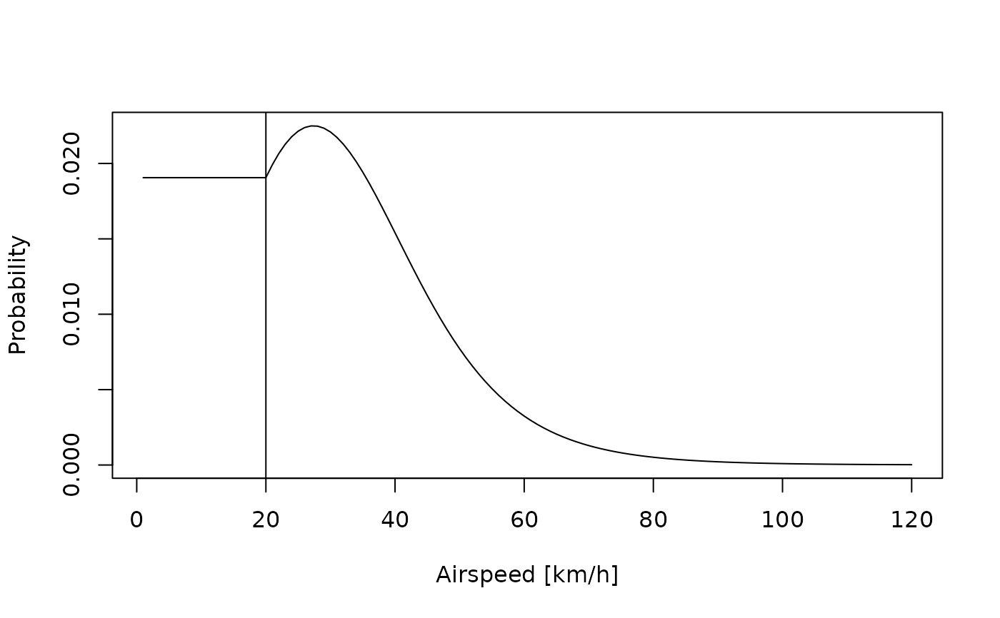

Converts a speed (airspeed or ground speed) to a probability based on the movement model.
See also
Other movement:
bird_create(),
graph_set_movement(),
graph_transition(),
plot_graph_movement(),
tag_download_wind()
Examples
speed <- seq(1, 120)
low_speed_fix <- 20 # minimum speed allowed
prob <- speed2prob(
speed,
list(
method = "gamma",
shape = 7,
scale = 7,
low_speed_fix = low_speed_fix
)
)
plot(speed, prob,
type = "l",
xlab = "Groundspeed [km/h]",
ylab = "Probability"
)
abline(v = low_speed_fix)
# Using airspeed
bird <- bird_create("Acrocephalus arundinaceus")
prob <- speed2prob(
speed,
list(
method = "power",
bird = bird,
power2prob = \(power) (1 / power)^3,
low_speed_fix = low_speed_fix
)
)
plot(speed, prob, type = "l", xlab = "Airspeed [km/h]", ylab = "Probability")
abline(v = low_speed_fix)
